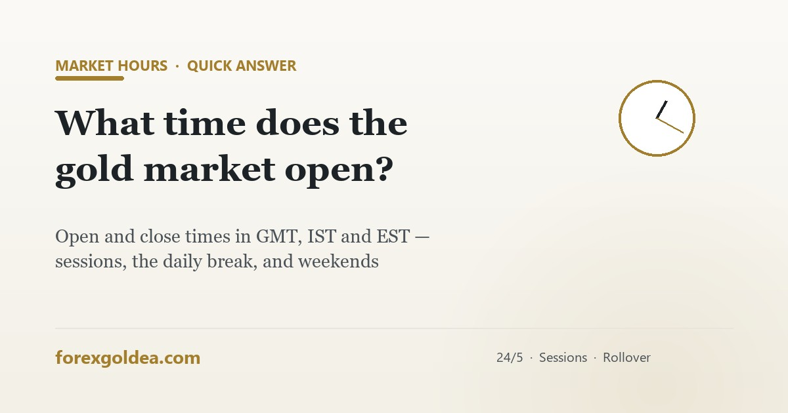

What time does the gold market open and close?

Simple question, and one every gold trader eventually googles at an odd hour: is the market even open right now? Here's the complete schedule — with a timezone table — plus the two windows inside the open hours that behave like they're closed.
The weekly schedule in one table
| Event | GMT | IST (India) | EST (New York) |
|---|---|---|---|
| Weekly open | Sunday ~22:00 | Monday ~3:30 AM | Sunday ~5:00 PM |
| Daily break | ~21:00–22:00 | ~2:30–3:30 AM | ~4:00–5:00 PM |
| Weekly close | Friday ~21:00 | Sat ~2:30 AM | Friday ~4:00 PM |
The 24-hour relay: who's trading when
| Session | GMT (approx) | IST | Character for gold |
|---|---|---|---|
| Sydney/Asia | 22:00–08:00 | 3:30 AM–1:30 PM | Quietest — small ranges, relatively wider spreads |
| London | 08:00–17:00 | 1:30–10:30 PM | Volume arrives; real moves begin |
| London–NY overlap | 13:00–17:00 | 6:30–10:30 PM | Peak liquidity — gold's prime time |
| New York late | 17:00–21:00 | 10:30 PM–2:30 AM | Fading volume into the daily break |
India-based traders are luckiest here: gold's prime time lands in the comfortable evening, 6:30–10:30 PM IST. The full liquidity analysis is in best time to trade XAUUSD.
Open but dangerous: the three trap windows
- Daily rollover (~21:00–22:00 GMT): liquidity providers reset — spreads jump 3–10× for a stretch every single day. Technically open, practically expensive.
- Sunday open: weekend news gets priced in one gap — thin books, jumpy quotes, and stop-loss fills far from Friday's close.
- News minutes (NFP, CPI, FOMC): the market is wide open and execution is at its worst — why disciplined systems stand aside.
Weekends and holidays
Spot gold closes completely from Friday evening to Sunday evening (GMT). It also closes or thins severely on major US holidays — Christmas, New Year's Day, Thanksgiving, July 4th — when US liquidity is absent even if quotes tick. Crypto's 24/7 schedule is one of the genuine differences we covered in gold vs Bitcoin.
What this means for an EA
A robot can technically trade any open minute — which is exactly why good ones don't. ForexGoldEA trades the liquid windows and stands aside at rollover and around news, because "open" and "worth trading" are different things. If you run any EA on a VPS, it simply follows this map 24/5 without you doing timezone math at 3 AM — see how EAs work.
Reader questions
What time does the gold market open?
Sunday ~22:00 GMT (Sun 5 PM EST / Mon 3:30 AM IST), then nearly 24/5 all week.
Is the gold market open 24 hours?
24/5 with a short daily break — closed weekends; liquidity varies a lot within open hours.
What are gold market timings in India (IST)?
Mon ~3:30 AM to Sat ~2:30 AM IST; prime time 6:30–10:30 PM IST.
Why is gold closed on weekends?
The banking/futures network closes — weekend news prices in as a Sunday gap.
When is the gold market most active?
London–NY overlap: ~13:00–17:00 GMT / 6:30–10:30 PM IST.
Do gold trading robots trade all open hours?
Good ones don't — they trade liquid windows and skip rollover/news traps.
Where this leaves you
Gold's schedule is simple to memorize — Sunday evening to Friday evening GMT, one short break a day — but the useful knowledge is the layer underneath: open hours aren't equal. Prime time is the London–NY overlap; the traps are rollover, Sunday's gap and news minutes. Trade (or let your robot trade) the liquid map, not just the open one, and the clock becomes an edge instead of a footnote.
Affiliate disclosure: we earn a commission when you open and fund an account through our partner links, at no extra cost to you.